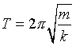
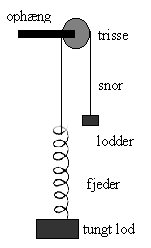
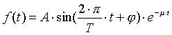
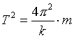
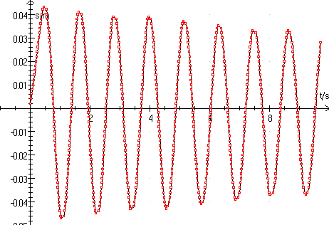

At eftervise Hookes lov for en fjeder.
At eftervise, at svingningstiden er bestemt ved

At undersøge dæmpningen i bevægelsen.

Til øvelsen benyttes en LabPro og Two-way pulley fra A/S Frederiksen og programmet Datalyse.
Two-way pulley er forsynet med to lysveje, derfor kan den måle retning. Den er ideel til harmoniske svingningerFjederen belastes med forskellige lodder, og fjederforlængelsen måles. Foretag så mange målinger som muligt. I dette forsøg benyttes pc’en ikke!
Fjederen belastes med forskellige lodder, og for hver belastning måles svingningstiden. Se forsøgsopstilling til højre.
Start programmet Datalyse og vælg apparatet | LabPro og menuen for LabPro vælges Two-way pulley. Sæt antallet af målinger til 2000, og vælg automatisk beregning af nulpunkt.
Sæt lodderne i bevægelse. Når (og hvis) systemet svinger pænt, startes dataopsamlingen.
Når målingen er afsluttet, ses en harmonisk svingning på skærmen. Nu klikker du blot på ikonen for bestemmelse af nulpunkter. Klik indtil alle nulpunkter er bestemt. Da afstanden mellem to nulpunkter er den halve svingningstid, fås herved en beregning af denne. Datalyse skriver udregninger i memoen, se denne.
Et Fif: Hvis lodderne begynder at svinge fra side til side, er det fordi fjederens svingningstid og pendulets svingningstid er omtrent ens, det afhjælpes ved at ændre snorlængden.
En dæmpet harmonisk svingning er givet ved

, hvor
A er amplituden, T er svingningstiden, j er begyndelsesfasen og m dæmpningskonstanten.
I Datalyse vælges funktion f(t) i panelet til venstre og funktionen skrives således:
f(t) = a1*sin(2*pi/(2*T½)*t+a2)*exp(-a3*t) + a4.
Skriv passende værdier for konstanterne a1, a2, a3 og a4. (T½ = afstanden mellem nulpunkterne)
Klik herefter på symbolet Fit til venstre og tilpas konstanterne a1, a2, a3 og a4.
Dine måleskemaer skal indeholde de direkte målte størrelser.
| Forsøg 1 | målte størrelser | beregnede størrelser | ||
| position af lod | loddernes masse | fjederforlængelse | fjederkraft | |
| tom holder | ||||
| 1 lodder | ||||
| 2 .. | ||||
Som det fremgår af skemaet, måles forlængelsen ud fra positionen af den tomme holder og fjederkraften er kraften på lodderne alene.
Gør rede for, hvordan fjederkraften beregnes. Der skal være en tegning, der viser hvilke kræfter, der virker på lodderne.
Afbild fjederkraften som funktion af fjederforlængelsen.
Hvordan kan man af grafen se, om Hookes lov er opfyldt.
Beregn fjederkonstanten k for fjederen. Vær omhyggelig, da k benyttes i forsøg 2.
| Forsøg 2 | målte størrelser | beregnede størrelser | ||
| masse m | ½T (snit) | T | T 2 | |
| tom holder | ||||
| 1 lodder | ||||
| 2 .. | ||||
Afbild T 2 som funktion af massen m.
Afbild i samme koordinatsystem »det teoretiske udtryk«

Grafen for T 2 som funktion af m vil ikke gå gennem (0,0)! Det skyldes, at en del af fjederens masse (og en del af trissens masse) bør medregnes i bevægelsen.
Kopier en graf for en dæmpet harmonisk svingning fra Datalyse til din rapport og kopier også forskriften for bevægelsen. Er bevægelsen en dæmpet harmonisk svingning?
Overvej nøjagtigheden i forsøget og angiv fejlkilder.

Det er bedst, hvis amplituden ikke er for lille, for der er en lille usikkerhed ved bestemmelse af stedet, når bevægelsen skifter retning.